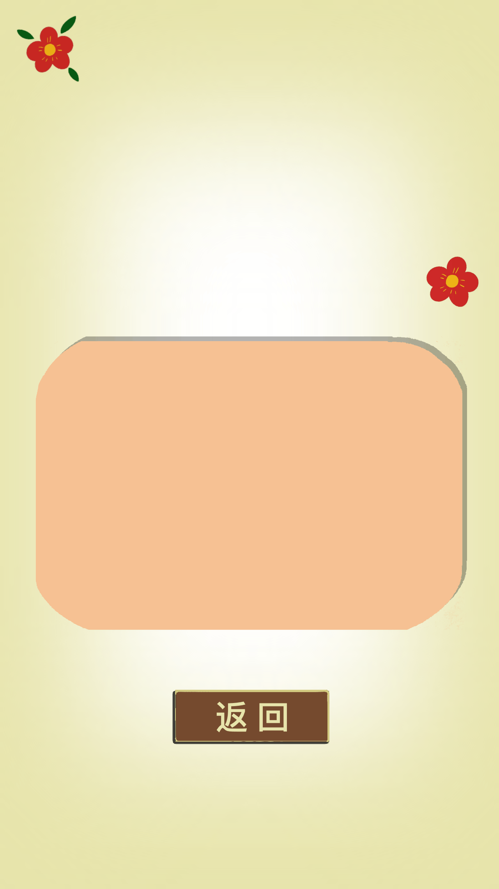

无名的人 (《雄狮少年》电影主题曲) - 毛不易
我是这路上 没名字的人
我没有新闻 没有人评论
要拼尽所有 换得普通的剧本
曲折辗转 不过谋生
我是离开 小镇上的人
是哭笑着 吃过饭的人
是赶路的人 是养家的人
是城市背景的 无声
我不过 想亲手触摸
弯过腰的每一刻
留下的 湿透的脚印 是不是值得
这哽咽 若你也相同
就是同路的朋友
致所有 顶天立地却 平凡普通的
无名的人啊 我敬你一杯酒
敬你的沉默 和每一声怒吼
敬你弯着腰 上山往高处走
头顶 苍穹 努力地生活
你来自于 南方的村落
来自粗糙的双手
你站在 楼宇的缝隙
可你没有退缩
我来自于 北方的春天
来自一步一回首
背后有 告别的路口
温暖每个日落
当家乡入冬 的时候
列车到站 以后
小时候的风 再吹过
回忆起单纯 的快乐
在熟悉的 街头
有人 会用所有的温柔 喊出你的
名字
离家的人啊 我敬你一杯酒
敬你的沉默 和每一声怒吼
敬你弯着腰 上山往高处走
头顶 苍穹 努力地生活
无名的人啊 我敬你一杯酒
敬你的沉默 和每一声怒吼
敬你弯着腰 上山往高处走
头顶 苍穹 努力地生活
无名的人啊
无名的人啊
无名的人啊 车来啦
太多牵挂就 别回头啊
无名的人啊 车开啦
往前吧 带着你的梦